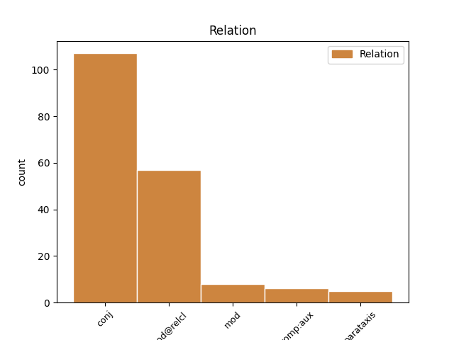
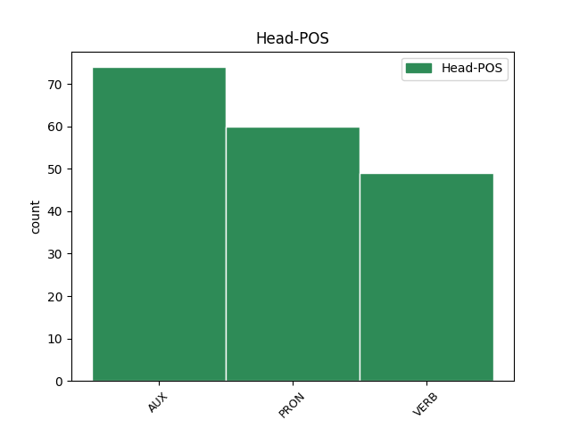
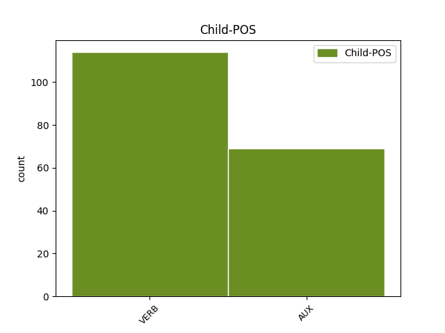

Distribution of features within this leaf



Agreement Rules sorted by frequency.
- When the dependent token is the conjunct(conj) of the head token, and the dependent token is VERB.
1 Et _ _ _ _ 0 _ _ _
2 je _ _ _ _ 0 _ _ _
3 me _ _ _ _ 0 _ _ _
4 souviens _ _ _ _ 0 _ _ _
5 que _ _ _ _ 0 _ _ _
6 j' _ _ _ _ 0 _ _ _
7 étais être AUX VA Mood=Ind|Number=Sing|Person=1|Tense=Imp|VerbForm=Fin 0 _ _ _
8 assis _ _ _ _ 0 _ _ _
9 à _ _ _ _ 0 _ _ _
10 mon _ _ _ _ 0 _ _ _
11 bureau _ _ _ _ 0 _ _ _
12 et _ _ _ _ 0 _ _ _
13 je _ _ _ _ 0 _ _ _
14 pensais penser VERB V Mood=Ind|Number=Sing|Person=1|Tense=Imp|VerbForm=Fin 7 conj _ SpaceAfter=No
15 , _ _ _ _ 0 _ _ _
16 " _ _ _ _ 0 _ _ _
17 et _ _ _ _ 0 _ _ _
18 bien _ _ _ _ 0 _ _ _
19 , _ _ _ _ 0 _ _ _
20 je _ _ _ _ 0 _ _ _
21 le _ _ _ _ 0 _ _ _
22 sais _ _ _ _ 0 _ _ _
23 " _ _ _ _ 0 _ _ _
24 . _ _ _ _ 0 _ _ _
1 Ce _ _ _ _ 0 _ _ _
2 qui _ _ _ _ 0 _ _ _
3 arrivera _ _ _ _ 0 _ _ _
4 c' _ _ _ _ 0 _ _ _
5 est _ _ _ _ 0 _ _ _
6 que _ _ _ _ 0 _ _ _
7 les _ _ _ _ 0 _ _ _
8 chips _ _ _ _ 0 _ _ _
9 polystyrène _ _ _ _ 0 _ _ _
10 commenceront commencer VERB V Mood=Ind|Number=Plur|Person=3|Tense=Fut|VerbForm=Fin 0 _ _ _
11 à _ _ _ _ 0 _ _ _
12 voyager _ _ _ _ 0 _ _ _
13 dans _ _ _ _ 0 _ _ _
14 notre _ _ _ _ 0 _ _ _
15 société _ _ _ _ 0 _ _ _
16 ici _ _ _ _ 0 _ _ _
17 et _ _ _ _ 0 _ _ _
18 iront aller AUX VA Mood=Ind|Number=Plur|Person=3|Tense=Fut|VerbForm=Fin 10 conj _ _
19 s' _ _ _ _ 0 _ _ _
20 accumuler _ _ _ _ 0 _ _ _
21 chez _ _ _ _ 0 _ _ _
22 les _ _ _ _ 0 _ _ _
23 personnes _ _ _ _ 0 _ _ _
24 les _ _ _ _ 0 _ _ _
25 plus _ _ _ _ 0 _ _ _
26 ivres _ _ _ _ 0 _ _ _
27 et _ _ _ _ 0 _ _ _
28 radines _ _ _ _ 0 _ _ _
29 . _ _ _ _ 0 _ _ _
1 Et _ _ _ _ 0 _ _ _
2 c' _ _ _ _ 0 _ _ _
3 est _ _ _ _ 0 _ _ _
4 exactement _ _ _ _ 0 _ _ _
5 ce ce PRON PD Number=Sing|Person=3|PronType=Dem 0 _ _ _
6 qui _ _ _ _ 0 _ _ _
7 se _ _ _ _ 0 _ _ _
8 passe passer VERB V Mood=Ind|Number=Sing|Person=3|Tense=Pres|VerbForm=Fin 5 mod@relcl _ _
9 avec _ _ _ _ 0 _ _ _
10 les _ _ _ _ 0 _ _ _
11 PDB _ _ _ _ 0 _ _ _
12 dans _ _ _ _ 0 _ _ _
13 cette _ _ _ _ 0 _ _ _
14 pyramide _ _ _ _ 0 _ _ _
15 de _ _ _ _ 0 _ _ _
16 la _ _ _ _ 0 _ _ _
17 chaîne _ _ _ _ 0 _ _ _
18 alimentaire _ _ _ _ 0 _ _ _
19 . _ _ _ _ 0 _ _ _
1 En _ _ _ _ 0 _ _ _
2 fait _ _ _ _ 0 _ _ _
3 , _ _ _ _ 0 _ _ _
4 ce _ _ _ _ 0 _ _ _
5 qu' _ _ _ _ 0 _ _ _
6 on _ _ _ _ 0 _ _ _
7 a _ _ _ _ 0 _ _ _
8 fait _ _ _ _ 0 _ _ _
9 il _ _ _ _ 0 _ _ _
10 y _ _ _ _ 0 _ _ _
11 a _ _ _ _ 0 _ _ _
12 quelques _ _ _ _ 0 _ _ _
13 années _ _ _ _ 0 _ _ _
14 c' _ _ _ _ 0 _ _ _
15 était _ _ _ _ 0 _ _ _
16 d' _ _ _ _ 0 _ _ _
17 apprendre _ _ _ _ 0 _ _ _
18 comment _ _ _ _ 0 _ _ _
19 on _ _ _ _ 0 _ _ _
20 introduit _ _ _ _ 0 _ _ _
21 clandestinement _ _ _ _ 0 _ _ _
22 un _ _ _ _ 0 _ _ _
23 labo _ _ _ _ 0 _ _ _
24 de _ _ _ _ 0 _ _ _
25 biologie _ _ _ _ 0 _ _ _
26 moléculaire _ _ _ _ 0 _ _ _
27 à _ _ _ _ 0 _ _ _
28 Tokyo _ _ _ _ 0 _ _ _
29 et _ _ _ _ 0 _ _ _
30 de _ _ _ _ 0 _ _ _
31 l' _ _ _ _ 0 _ _ _
32 utiliser _ _ _ _ 0 _ _ _
33 pour _ _ _ _ 0 _ _ _
34 tester _ _ _ _ 0 _ _ _
35 génétiquement _ _ _ _ 0 _ _ _
36 l' _ _ _ _ 0 _ _ _
37 ADN _ _ _ _ 0 _ _ _
38 d' _ _ _ _ 0 _ _ _
39 échantillons _ _ _ _ 0 _ _ _
40 de _ _ _ _ 0 _ _ _
41 viande _ _ _ _ 0 _ _ _
42 de _ _ _ _ 0 _ _ _
43 baleine _ _ _ _ 0 _ _ _
44 et _ _ _ _ 0 _ _ _
45 identifier _ _ _ _ 0 _ _ _
46 ce ce PRON PD Number=Sing|Person=3|PronType=Dem 0 _ _ _
47 qu' _ _ _ _ 0 _ _ _
48 ils _ _ _ _ 0 _ _ _
49 étaient être AUX V Mood=Ind|Number=Plur|Person=3|Tense=Pres|VerbForm=Fin 46 mod@relcl _ _
50 vraiment _ _ _ _ 0 _ _ _
51 . _ _ _ _ 0 _ _ _
1 On _ _ _ _ 0 _ _ _
2 connaît connaître VERB V Mood=Ind|Number=Sing|Person=3|Tense=Pres|VerbForm=Fin 0 _ _ _
3 ça _ _ _ _ 0 _ _ _
4 , _ _ _ _ 0 _ _ _
5 n' _ _ _ _ 0 _ _ _
6 est être VERB V Mood=Ind|Number=Sing|Person=3|Tense=Pres|VerbForm=Fin 2 mod _ SpaceAfter=No
7 -ce _ _ _ _ 0 _ _ _
8 pas _ _ _ _ 0 _ _ _
9 ? _ _ _ _ 0 _ _ _
1 Rolf _ _ _ _ 0 _ _ _
2 Bolin _ _ _ _ 0 _ _ _
3 , _ _ _ _ 0 _ _ _
4 qui _ _ _ _ 0 _ _ _
5 était _ _ _ _ 0 _ _ _
6 professeur _ _ _ _ 0 _ _ _
7 à _ _ _ _ 0 _ _ _
8 la _ _ _ _ 0 _ _ _
9 station _ _ _ _ 0 _ _ _
10 marine _ _ _ _ 0 _ _ _
11 de _ _ _ _ 0 _ _ _
12 Hopkin _ _ _ _ 0 _ _ _
13 où _ _ _ _ 0 _ _ _
14 je _ _ _ _ 0 _ _ _
15 travaille _ _ _ _ 0 _ _ _
16 , _ _ _ _ 0 _ _ _
17 a avoir AUX VA Mood=Ind|Number=Sing|Person=3|Tense=Pres|VerbForm=Fin 0 _ _ _
18 écrit écrire VERB V Mood=Ind|Number=Sing|Person=3|Tense=Pres|VerbForm=Fin 17 comp:aux _ _
19 dans _ _ _ _ 0 _ _ _
20 les _ _ _ _ 0 _ _ _
21 années _ _ _ _ 0 _ _ _
22 40 _ _ _ _ 0 _ _ _
23 que _ _ _ _ 0 _ _ _
24 , _ _ _ _ 0 _ _ _
25 " _ _ _ _ 0 _ _ _
26 les _ _ _ _ 0 _ _ _
27 gaz _ _ _ _ 0 _ _ _
28 émanant _ _ _ _ 0 _ _ _
29 de _ _ _ _ 0 _ _ _
30 la _ _ _ _ 0 _ _ _
31 crasse _ _ _ _ 0 _ _ _
32 flottante _ _ _ _ 0 _ _ _
33 dans _ _ _ _ 0 _ _ _
34 les _ _ _ _ 0 _ _ _
35 anses _ _ _ _ 0 _ _ _
36 de _ _ _ _ 0 _ _ _
37 le _ _ _ _ 0 _ _ _
38 golfe _ _ _ _ 0 _ _ _
39 étaient _ _ _ _ 0 _ _ _
40 si _ _ _ _ 0 _ _ _
41 mauvais _ _ _ _ 0 _ _ _
42 qu' _ _ _ _ 0 _ _ _
43 ils _ _ _ _ 0 _ _ _
44 faisaient _ _ _ _ 0 _ _ _
45 même _ _ _ _ 0 _ _ _
46 noircir _ _ _ _ 0 _ _ _
47 les _ _ _ _ 0 _ _ _
48 peintures _ _ _ _ 0 _ _ _
49 à _ _ _ _ 0 _ _ _
50 le _ _ _ _ 0 _ _ _
51 plomb _ _ _ _ 0 _ _ _
52 " _ _ _ _ 0 _ _ _
53 . _ _ _ _ 0 _ _ _
1 Et _ _ _ _ 0 _ _ _
2 je _ _ _ _ 0 _ _ _
3 me _ _ _ _ 0 _ _ _
4 souviens _ _ _ _ 0 _ _ _
5 que _ _ _ _ 0 _ _ _
6 j' _ _ _ _ 0 _ _ _
7 étais _ _ _ _ 0 _ _ _
8 assis _ _ _ _ 0 _ _ _
9 à _ _ _ _ 0 _ _ _
10 mon _ _ _ _ 0 _ _ _
11 bureau _ _ _ _ 0 _ _ _
12 et _ _ _ _ 0 _ _ _
13 je _ _ _ _ 0 _ _ _
14 pensais penser VERB V Mood=Ind|Number=Sing|Person=1|Tense=Imp|VerbForm=Fin 0 _ _ _
15 , _ _ _ _ 0 _ _ _
16 " _ _ _ _ 0 _ _ _
17 et _ _ _ _ 0 _ _ _
18 bien _ _ _ _ 0 _ _ _
19 , _ _ _ _ 0 _ _ _
20 je _ _ _ _ 0 _ _ _
21 le _ _ _ _ 0 _ _ _
22 sais savoir VERB V Mood=Ind|Number=Sing|Person=1|VerbForm=Fin 14 parataxis _ SpaceAfter=No
23 " _ _ _ _ 0 _ _ _
24 . _ _ _ _ 0 _ _ _
1 Certains _ _ _ _ 0 _ _ _
2 étaient être AUX V Mood=Ind|Number=Plur|Person=3|Tense=Pres|VerbForm=Fin 0 _ _ _
3 de _ _ _ _ 0 _ _ _
4 la _ _ _ _ 0 _ _ _
5 viande _ _ _ _ 0 _ _ _
6 de _ _ _ _ 0 _ _ _
7 baleine _ _ _ _ 0 _ _ _
8 illégale _ _ _ _ 0 _ _ _
9 , _ _ _ _ 0 _ _ _
10 soit être AUX VA Mood=Sub|Number=Sing|Person=3|Tense=Pres|VerbForm=Fin 2 parataxis _ _
11 dit _ _ _ _ 0 _ _ _
12 en _ _ _ _ 0 _ _ _
13 passant _ _ _ _ 0 _ _ _
14 . _ _ _ _ 0 _ _ _
1 - _ _ _ _ 0 _ _ _
2 en _ _ _ _ 0 _ _ _
3 ce _ _ _ _ 0 _ _ _
4 qui _ _ _ _ 0 _ _ _
5 concerne _ _ _ _ 0 _ _ _
6 l' _ _ _ _ 0 _ _ _
7 effet _ _ _ _ 0 _ _ _
8 de _ _ _ _ 0 _ _ _
9 le _ _ _ _ 0 _ _ _
10 programme _ _ _ _ 0 _ _ _
11 relatif _ _ _ _ 0 _ _ _
12 à _ _ _ _ 0 _ _ _
13 la _ _ _ _ 0 _ _ _
14 convergence _ _ _ _ 0 _ _ _
15 de _ _ _ _ 0 _ _ _
16 l' _ _ _ _ 0 _ _ _
17 action _ _ _ _ 0 _ _ _
18 de _ _ _ _ 0 _ _ _
19 formation _ _ _ _ 0 _ _ _
20 de _ _ _ _ 0 _ _ _
21 les _ _ _ _ 0 _ _ _
22 formateurs _ _ _ _ 0 _ _ _
23 à _ _ _ _ 0 _ _ _
24 un _ _ _ _ 0 _ _ _
25 niveau _ _ _ _ 0 _ _ _
26 élevé _ _ _ _ 0 _ _ _
27 , _ _ _ _ 0 _ _ _
28 il _ _ _ _ 0 _ _ _
29 n' _ _ _ _ 0 _ _ _
30 a avoir AUX VA Mood=Ind|Number=Sing|Person=3|Tense=Pres|VerbForm=Fin 0 _ _ _
31 pas _ _ _ _ 0 _ _ _
32 été _ _ _ _ 0 _ _ _
33 possible _ _ _ _ 0 _ _ _
34 de _ _ _ _ 0 _ _ _
35 réaliser _ _ _ _ 0 _ _ _
36 une _ _ _ _ 0 _ _ _
37 évaluation _ _ _ _ 0 _ _ _
38 car _ _ _ _ 0 _ _ _
39 les _ _ _ _ 0 _ _ _
40 informations _ _ _ _ 0 _ _ _
41 n' _ _ _ _ 0 _ _ _
42 étaient être AUX V Mood=Ind|Number=Plur|Person=3|Tense=Pres|VerbForm=Fin 30 mod _ _
43 pas _ _ _ _ 0 _ _ _
44 suffisantes _ _ _ _ 0 _ _ _
45 concernant _ _ _ _ 0 _ _ _
46 le _ _ _ _ 0 _ _ _
47 lien _ _ _ _ 0 _ _ _
48 entre _ _ _ _ 0 _ _ _
49 les _ _ _ _ 0 _ _ _
50 stratégies _ _ _ _ 0 _ _ _
51 nationales _ _ _ _ 0 _ _ _
52 et _ _ _ _ 0 _ _ _
53 les _ _ _ _ 0 _ _ _
54 activités _ _ _ _ 0 _ _ _
55 prévues _ _ _ _ 0 _ _ _
56 dans _ _ _ _ 0 _ _ _
57 le _ _ _ _ 0 _ _ _
58 cadre _ _ _ _ 0 _ _ _
59 de _ _ _ _ 0 _ _ _
60 Pericles _ _ _ _ 0 _ _ _
61 ; _ _ _ _ 0 _ _ _
Disagree Examples:
1 Ma _ _ _ _ 0 _ _ _
2 question _ _ _ _ 0 _ _ _
3 porte _ _ _ _ 0 _ _ _
4 sur _ _ _ _ 0 _ _ _
5 un _ _ _ _ 0 _ _ _
6 sujet _ _ _ _ 0 _ _ _
7 qui _ _ _ _ 0 _ _ _
8 est être AUX V Mood=Ind|Number=Sing|Person=3|Tense=Pres|VerbForm=Fin 0 _ _ _
9 à _ _ _ _ 0 _ _ _
10 l' _ _ _ _ 0 _ _ _
11 ordre _ _ _ _ 0 _ _ _
12 de _ _ _ _ 0 _ _ _
13 le _ _ _ _ 0 _ _ _
14 jour _ _ _ _ 0 _ _ _
15 de _ _ _ _ 0 _ _ _
16 le _ _ _ _ 0 _ _ _
17 jeudi _ _ _ _ 0 _ _ _
18 et _ _ _ _ 0 _ _ _
19 que _ _ _ _ 0 _ _ _
20 je _ _ _ _ 0 _ _ _
21 soulèverai soulever VERB V Mood=Ind|Number=Sing|Person=1|Tense=Fut|VerbForm=Fin 8 conj _ _
22 donc _ _ _ _ 0 _ _ _
23 une _ _ _ _ 0 _ _ _
24 nouvelle _ _ _ _ 0 _ _ _
25 fois _ _ _ _ 0 _ _ _
26 . _ _ _ _ 0 _ _ _
1 Nous _ _ _ _ 0 _ _ _
2 savons _ _ _ _ 0 _ _ _
3 , _ _ _ _ 0 _ _ _
4 et _ _ _ _ 0 _ _ _
5 nous _ _ _ _ 0 _ _ _
6 l' _ _ _ _ 0 _ _ _
7 avons _ _ _ _ 0 _ _ _
8 d' _ _ _ _ 0 _ _ _
9 ailleurs _ _ _ _ 0 _ _ _
10 établi _ _ _ _ 0 _ _ _
11 dans _ _ _ _ 0 _ _ _
12 de _ _ _ _ 0 _ _ _
13 très _ _ _ _ 0 _ _ _
14 nombreuses _ _ _ _ 0 _ _ _
15 résolutions _ _ _ _ 0 _ _ _
16 - _ _ _ _ 0 _ _ _
17 y _ _ _ _ 0 _ _ _
18 compris _ _ _ _ 0 _ _ _
19 lors _ _ _ _ 0 _ _ _
20 de _ _ _ _ 0 _ _ _
21 la _ _ _ _ 0 _ _ _
22 dernière _ _ _ _ 0 _ _ _
23 période _ _ _ _ 0 _ _ _
24 de _ _ _ _ 0 _ _ _
25 session _ _ _ _ 0 _ _ _
26 de _ _ _ _ 0 _ _ _
27 l' _ _ _ _ 0 _ _ _
28 année _ _ _ _ 0 _ _ _
29 dernière _ _ _ _ 0 _ _ _
30 - _ _ _ _ 0 _ _ _
31 , _ _ _ _ 0 _ _ _
32 que _ _ _ _ 0 _ _ _
33 ce _ _ _ _ 0 _ _ _
34 cas _ _ _ _ 0 _ _ _
35 n' _ _ _ _ 0 _ _ _
36 est _ _ _ _ 0 _ _ _
37 pas _ _ _ _ 0 _ _ _
38 seulement _ _ _ _ 0 _ _ _
39 de _ _ _ _ 0 _ _ _
40 nature _ _ _ _ 0 _ _ _
41 juridique _ _ _ _ 0 _ _ _
42 et _ _ _ _ 0 _ _ _
43 qu' _ _ _ _ 0 _ _ _
44 il _ _ _ _ 0 _ _ _
45 est être AUX V Mood=Ind|Number=Sing|Person=3|Tense=Pres|VerbForm=Fin 0 _ _ _
46 faux _ _ _ _ 0 _ _ _
47 d' _ _ _ _ 0 _ _ _
48 accuser _ _ _ _ 0 _ _ _
49 Alexandre _ _ _ _ 0 _ _ _
50 Nikitin _ _ _ _ 0 _ _ _
51 d' _ _ _ _ 0 _ _ _
52 activité _ _ _ _ 0 _ _ _
53 criminelle _ _ _ _ 0 _ _ _
54 et _ _ _ _ 0 _ _ _
55 de _ _ _ _ 0 _ _ _
56 trahison _ _ _ _ 0 _ _ _
57 car _ _ _ _ 0 _ _ _
58 nous _ _ _ _ 0 _ _ _
59 sommes être AUX VA Mood=Ind|Number=Plur|Person=1|Tense=Pres|VerbForm=Fin 45 conj _ _
60 concernés _ _ _ _ 0 _ _ _
61 par _ _ _ _ 0 _ _ _
62 ses _ _ _ _ 0 _ _ _
63 résultats _ _ _ _ 0 _ _ _
64 et _ _ _ _ 0 _ _ _
65 nous _ _ _ _ 0 _ _ _
66 en _ _ _ _ 0 _ _ _
67 profitons _ _ _ _ 0 _ _ _
68 . _ _ _ _ 0 _ _ _
1 Madame _ _ _ _ 0 _ _ _
2 la _ _ _ _ 0 _ _ _
3 présidente _ _ _ _ 0 _ _ _
4 , _ _ _ _ 0 _ _ _
5 je _ _ _ _ 0 _ _ _
6 voudrais vouloir AUX VM Mood=Cnd|Number=Sing|Person=1|Tense=Pres|VerbForm=Fin 0 _ _ _
7 tout _ _ _ _ 0 _ _ _
8 d' _ _ _ _ 0 _ _ _
9 abord _ _ _ _ 0 _ _ _
10 vous _ _ _ _ 0 _ _ _
11 féliciter _ _ _ _ 0 _ _ _
12 pour _ _ _ _ 0 _ _ _
13 avoir _ _ _ _ 0 _ _ _
14 tenu _ _ _ _ 0 _ _ _
15 parole _ _ _ _ 0 _ _ _
16 car _ _ _ _ 0 _ _ _
17 en _ _ _ _ 0 _ _ _
18 effet _ _ _ _ 0 _ _ _
19 , _ _ _ _ 0 _ _ _
20 en _ _ _ _ 0 _ _ _
21 cette _ _ _ _ 0 _ _ _
22 première _ _ _ _ 0 _ _ _
23 période _ _ _ _ 0 _ _ _
24 de _ _ _ _ 0 _ _ _
25 session _ _ _ _ 0 _ _ _
26 , _ _ _ _ 0 _ _ _
27 en _ _ _ _ 0 _ _ _
28 cette _ _ _ _ 0 _ _ _
29 nouvelle _ _ _ _ 0 _ _ _
30 année _ _ _ _ 0 _ _ _
31 , _ _ _ _ 0 _ _ _
32 le _ _ _ _ 0 _ _ _
33 nombre _ _ _ _ 0 _ _ _
34 de _ _ _ _ 0 _ _ _
35 chaînes _ _ _ _ 0 _ _ _
36 de _ _ _ _ 0 _ _ _
37 télévision _ _ _ _ 0 _ _ _
38 a avoir AUX VA Mood=Ind|Number=Sing|Person=3|Tense=Pres|VerbForm=Fin 6 conj _ _
39 réellement _ _ _ _ 0 _ _ _
40 été _ _ _ _ 0 _ _ _
41 augmenté _ _ _ _ 0 _ _ _
42 de _ _ _ _ 0 _ _ _
43 manière _ _ _ _ 0 _ _ _
44 significative _ _ _ _ 0 _ _ _
45 dans _ _ _ _ 0 _ _ _
46 nos _ _ _ _ 0 _ _ _
47 locaux _ _ _ _ 0 _ _ _
48 . _ _ _ _ 0 _ _ _
1 Toutefois _ _ _ _ 0 _ _ _
2 , _ _ _ _ 0 _ _ _
3 madame _ _ _ _ 0 _ _ _
4 la _ _ _ _ 0 _ _ _
5 présidente _ _ _ _ 0 _ _ _
6 , _ _ _ _ 0 _ _ _
7 ce ce PRON PD Number=Sing|Person=3|PronType=Dem 0 _ _ _
8 que _ _ _ _ 0 _ _ _
9 j' _ _ _ _ 0 _ _ _
10 avais avoir AUX VA Mood=Ind|Number=Sing|Person=1|Tense=Imp|VerbForm=Fin 7 mod@relcl _ _
11 demandé _ _ _ _ 0 _ _ _
12 n' _ _ _ _ 0 _ _ _
13 a _ _ _ _ 0 _ _ _
14 pas _ _ _ _ 0 _ _ _
15 été _ _ _ _ 0 _ _ _
16 réalisé _ _ _ _ 0 _ _ _
17 . _ _ _ _ 0 _ _ _
1 Madame _ _ _ _ 0 _ _ _
2 Lynne _ _ _ _ 0 _ _ _
3 , _ _ _ _ 0 _ _ _
4 vous _ _ _ _ 0 _ _ _
5 avez avoir VERB V Mood=Ind|Number=Plur|Person=2|Tense=Pres|VerbForm=Fin 0 _ _ _
6 parfaitement _ _ _ _ 0 _ _ _
7 raison _ _ _ _ 0 _ _ _
8 et _ _ _ _ 0 _ _ _
9 je _ _ _ _ 0 _ _ _
10 vais aller AUX VA Mood=Ind|Number=Sing|Person=1|Tense=Pres|VerbForm=Fin 5 conj _ _
11 vérifier _ _ _ _ 0 _ _ _
12 si _ _ _ _ 0 _ _ _
13 tout _ _ _ _ 0 _ _ _
14 cela _ _ _ _ 0 _ _ _
15 n' _ _ _ _ 0 _ _ _
16 a _ _ _ _ 0 _ _ _
17 effectivement _ _ _ _ 0 _ _ _
18 pas _ _ _ _ 0 _ _ _
19 été _ _ _ _ 0 _ _ _
20 fait _ _ _ _ 0 _ _ _
21 . _ _ _ _ 0 _ _ _